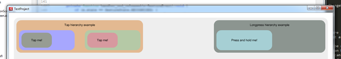

Let's check out how TestProject is done.
TestProject.as contains initialization code:
TouchManager.init(stage);
_mouseInput = new MouseInput(stage);
_tuioInput = new TuioInput(stage.stageWidth, stage.stageHeight);
addChild(new TouchDebugger());
It sets up a Mouse Input and a TUIO Input to test multi-touch gestures.
Inside Example1 class you'll see how the whole scene is constructed. There are many boxes placed within other boxes and several gestures attached to them.
var tapGesture:TapGesture = new TapGesture(tap1);
tapGesture.addEventListener(GestureEvent.STATE_CHANGED, handler_tap_tapped);
private function handler_tap_tapped(e:GestureEvent):void {
if (e.state == GestureState.RECOGNIZED) {
((e.target as Gesture).displayTarget as Box).setColor(Defaults.randomColor());
}
}
This is the simplest way to add a Tap Gesture to an InteractiveObject.
To allow gestures work together use shouldRecognizeSimultaneouslyWith which must be called at least once per pair of gestures:
panGesture.shouldRecognizeSimultaneouslyWith(scaleGesture, true);
panGesture.shouldRecognizeSimultaneouslyWith(rotateGesture, true);
scaleGesture.shouldRecognizeSimultaneouslyWith(rotateGesture, true);
The final result is not that pretty but clearly shows how to work with gestures in ActionScript 3.
